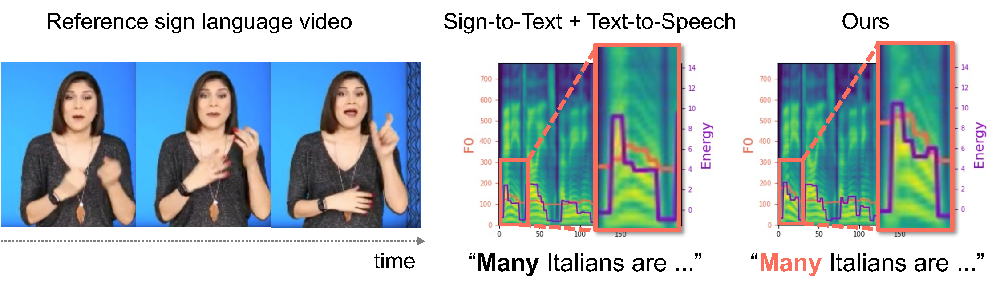
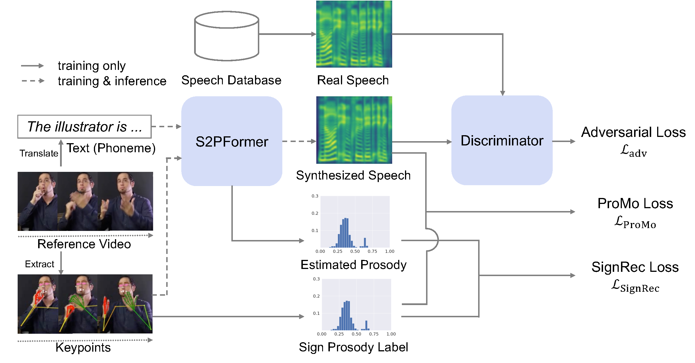
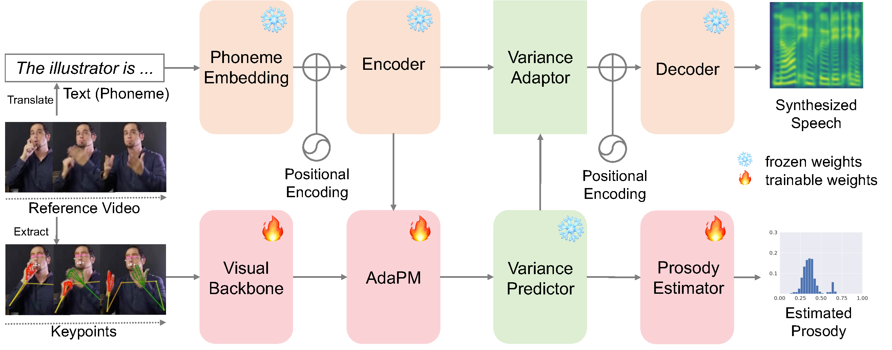
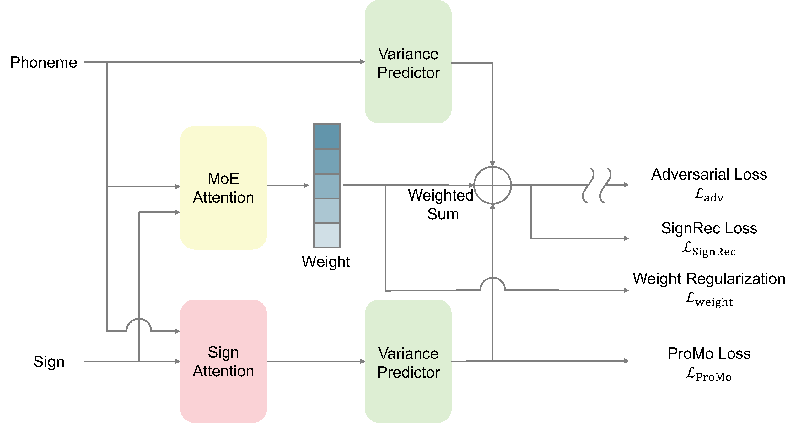
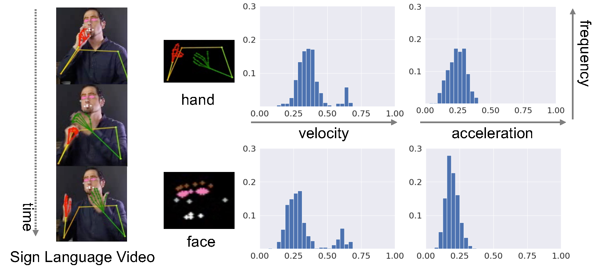
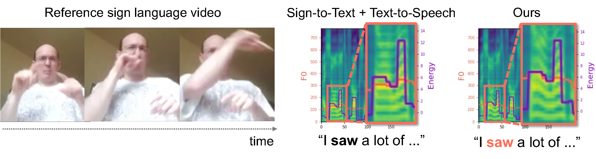
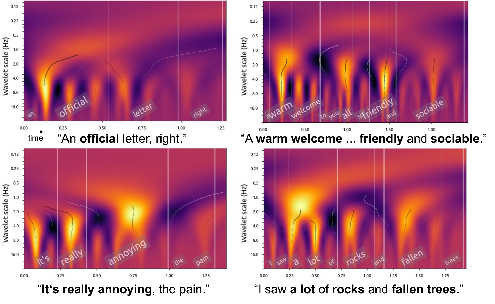

Deep learning models have improved sign language-to-text translation, making signed messages more accessible to non-signers. When the goal is spoken communication, a naive approach converts signed messages to text and then synthesizes speech via Text-to-Speech (TTS). However, this two-stage pipeline inevitably treats text as a bottleneck, causing the loss of rich non-verbal information originally conveyed in signing.
To address this limitation, we propose a novel task, Sign-to-Speech Prosody Transfer, which aims to capture the global prosodic nuances expressed in sign language and directly integrate them into synthesized speech. A major challenge is that aligning sign and speech requires expert knowledge, making annotation extremely costly. To overcome this, we introduce SignRecGAN, a scalable training framework that leverages unimodal datasets without cross-modal annotations through adversarial learning and reconstruction losses. We also propose S2PFormer, a new model architecture that preserves the expressive power of existing TTS models while enabling the injection of sign-derived prosody.
Extensive experiments demonstrate that our method synthesizes speech that faithfully reflects the emotional content of sign language, opening new possibilities for more natural sign language communication.
We define Sign-to-Speech Prosody Transfer — the first task to capture global prosody from sign language and integrate it directly into speech synthesis.
An adversarial learning framework using unpaired unimodal datasets with SignRec loss and ProMo loss to bridge the sign-speech gap without paired annotations.
A Sign-to-Prosody Transformer that augments a pretrained FastSpeech2 with a cross-attention branch, preserving speech quality while injecting sign-derived prosody.

Fig. 1. In the reference sign language video (left), the phrase "many Italians" is emphasized through rapid hand movements and facial expressions. The two-stage baseline (middle) fails to reflect this prosody, whereas our approach (right) successfully captures the emphasis on "many."
SignRecGAN consists of four main components working together to transfer prosodic expression
from sign language into synthesized speech without paired cross-modal annotations.

Fig. 2. SignRecGAN Overview. The framework trains with unpaired unimodal datasets of sign language (OpenASL) and speech (VCTK). S2PFormer generates prosody-enriched speech, supervised by SignRec loss (sign motion reconstruction), ProMo loss (cross-modal regularization), and an adversarial discriminator.

Fig. 3. S2PFormer augments a frozen FastSpeech2 backbone with a visual backbone (CTR-GCN + MS-TCN), Adaptive Prosody Mixer (AdaPM), and a prosody estimator to inject sign language features while preserving speech quality.

Fig. 4. AdaPM adaptively balances the sign-language prosody contribution and the original TTS prosody using a Mixture-of-Experts inspired gating mechanism, enabling stable training.
Reconstructs sign language motion (velocity & acceleration histograms of hands and face) from the synthesized speech's prosody features (pitch & energy). By forcing the model to preserve recoverable sign cues in speech, it ensures the two modalities remain correlated.
ℒSignRec = −¼ ΣM∈𝓜 Σk PM(k) log P̂M(k)
Aligns the distributions of sign language and speech using cross-modal prior knowledge: hand movement magnitude correlates with speech energy; facial velocity correlates with speech pitch. A margin c prevents over-regularization.
ℒProMo = max(|μenergy − μv,hand| − c, 0) + ...

Fig. 5. Sign Language Prosody Labels. Motion histograms of hand velocity/acceleration and facial velocity/acceleration serve as proxy labels for sign prosody, enabling training without any cross-modal annotations.
For each sample: the source sign language video (left), speech from the two-stage baseline (middle),
and speech from our SignRecGAN (right). Listen and compare the prosodic richness.
Sign → Text → TTS
Sign → Speech with Prosody
Sign → Text → TTS
Sign → Speech with Prosody
Sign → Text → TTS
Sign → Speech with Prosody
Sign → Text → TTS
Sign → Speech with Prosody
Sign → Text → TTS
Sign → Speech with Prosody
Sign → Text → TTS
Sign → Speech with Prosody
Quantitative evaluation on expressiveness and naturalness of synthesized speech, with ablation study.
Expressiveness is measured by pitch/energy standard deviation (closer to Real Speech = better). Naturalness by WER↓ and UTMOS↑.
| Method | Losses | Expressiveness | Naturalness | ||||
|---|---|---|---|---|---|---|---|
| GAN | SignRec | ProMo | Pitch (→28.9) | Energy (→25.4) | WER ↓ | UTMOS ↑ | |
| Real Speech | — | — | — | 28.9 | 25.4 | 0.04 | 4.07 |
| Two-Stage (Baseline) | — | — | — | 17.6 | 20.1 | 0.293 | 3.52 |
| Ours (GAN only) | ✓ | — | — | 48.4 | 44.6 | 0.212 | 3.29 |
| Ours (GAN + SignRec) | ✓ | ✓ | — | 44.2 | 39.7 | 0.448 | 2.95 |
| Ours (GAN + ProMo) | ✓ | — | ✓ | 45.3 | 28.6 | 0.623 | 3.03 |
| Ours (SignRecGAN — Full) | ✓ | ✓ | ✓ | 33.7 | 22.5 | 0.325 | 3.44 |
Bold = best; underlined = second-best. Arrow (→) indicates target value from Real Speech.
CMOS scores with 95% confidence intervals. Green = statistically significant improvement (p < 0.05).
| Criterion | Short (3–8 words) |
Medium (9–13 words) |
Long (14–18 words) |
Neutral (low prosody) |
Total |
|---|---|---|---|---|---|
| Prosody Match | 3.12 (±0.22) | 3.19 (±0.16) | 3.19 (±0.16) | 3.00 (±0.18) | 3.17 (±0.11) |
| Naturalness | 2.93 (±0.17) | 2.97 (±0.17) | 2.87 (±0.15) | 2.96 (±0.15) | 2.92 (±0.11) |
SignRecGAN significantly outperforms the two-stage baseline in prosody match for medium and long utterances, while maintaining comparable naturalness. On neutral (low-prosody) samples, quality is preserved without degradation.
Mel spectrogram comparisons and word-level prominence analysis reveal
richer prosodic structure in SignRecGAN outputs.

Fig. 6. Mel Spectrogram Comparison. For the phrase "I saw", the reference signer displays dynamic facial expressions and hand movements. SignRecGAN (right) captures the prosodic emphasis, while the two-stage baseline (middle) produces flat, unexpressive speech.

Fig. 7. Prominence Analysis. Using Wavelet Prosody Toolkit, we observe that SignRecGAN naturally emphasizes semantically important words (e.g., "annoying", "a lot") while avoiding emphasis on function words (e.g., "and"). This fine-grained prosodic behavior emerges from the combination of reconstruction losses and adversarial training.
@inproceedings{manabe2026sign2speech,
title = {Sign-to-Speech Prosody Transfer via Sign Reconstruction-based GAN},
author = {Manabe, Toranosuke and Shibata, Yuto and Takamichi, Shinnosuke and Aoki, Yoshimitsu},
booktitle = {Proceedings of the International Conference on Pattern Recognition (ICPR)},
year = {2026},
address = {Keio University, Yokohama, Japan}
}